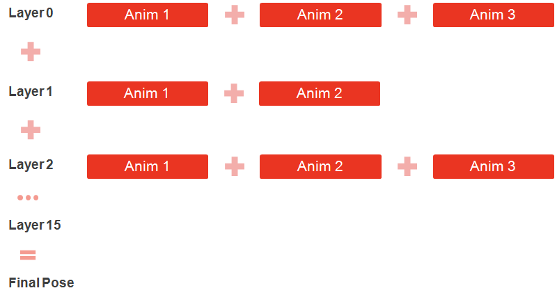

Overview
Animations are started in layers:

We have a total of 16 animation layers available.
Layer 0 is special as it is considered the base layer. Layer 0 supports blend spaces and motion extraction.
Animations are mixed by running them on different layers concurrently. Layers that have no animations have no effect (eg. it is possible to only have animations in layer 0 and layer 6).
The base layer will usually contain full body animation (affecting most joints and containing motion), while higher layers usually play override or additive partial body animations (affecting only a subset of joints).
Transition Queues
When starting an animation in a layer, the default behavior is for the current animations in that layer to be blended out (decrease their current weight to 0) and be removed from the queue when their weight reaches 0, and the new animation to be blended in (increase its weight from 0 to 1).
This blending in and out of animations is handled by a component called the Transition Queue.
Transition Queues behaves like FIFO (First-In-First-Out) queues.
Each animation layer has its own Transition Queue.
The Transition Queue also holds the state information for all animations playing on it (timing, weight, flags).
Animations will also be removed from the queue once they are fully played once. This default behavior can be changed by starting animations with the looping flag (CA_LOOP_ANIMATION), or the repeat last key flag (CA_REPEAT_LAST_KEY). Those flags will cause the animation to remain in the queue until a new animation is started on the same layer.
Code
Communication with the animation layers and the transition queues of a character is always done through the ISkeletonAnim interface.
To obtain the ISkeletonAnim interface, call the GetISkeletonAnim() function for your character instance (ICharacterInstance).
Starting Animations
Animations are started on layers via the StartAnimation or StartAnimationById functions.
ISkeltonAnim& skeletonAnim = ...;
CryCharAnimationParams params;
params.m_nLayerID = 2;
params.m_nFlags |= CA_LOOP_ANIMATION;
params.m_fTransTime = 0.5f;
// Starting the animation by id. Alternatively use StartAnimation to start an animation by name.
skeletonAnim.StartAnimationById(animationId, params);In the example above we request a looping animation to be started on layer 2, and we want it to be fully blended in in 0.5 seconds.
Detailed information on all the possible parameters and flags available for the CryCharAnimationParams can be found in the CryCharAnimationParams.h file in CryCommon.
Stopping Animations
To smoothly blend out animations in a layer we can use the StopAnimationInLayer function:
ISkeltonAnim& skeletonAnim = ...;
// Blend out all animations in layer 2 in 0.5 seconds:
skeletonAnim.StopAnimationInLayer(2, 0.5f);To force the TransitionQueue in a specific layer to immediately clear all its animations:
ISkeltonAnim& skeletonAnim = ...;
skeletonAnim.ClearFIFOLayer(layerId);To force the all TransitionQueues in all layers to be to cleared immediately we can use StopAnimationsAllLayers.
ISkeltonAnim& skeletonAnim = ...;
skeletonAnim.StopAnimationsAllLayers();Inspecting the Transition Queue
To obtain the number of animations in a transition queue we can use GetNumAnimsInFIFO.
We can then obtain animations from the queue with GetAnimFromFIFO.
The last animation in the queue (numAnims - 1) is always the last animation that was pushed and in most cases it's the animation the transition queue is trying to blend in. In some sections of code it might be referred to as the "top" animation.
GetAnimFromFIFO obtains a CAnimation structure that contains the state of a specific animation in the transition queue.